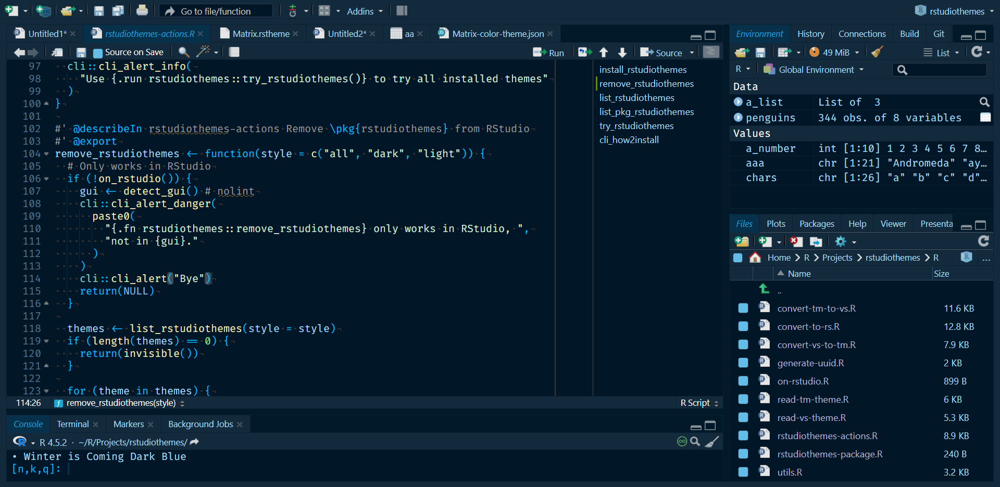

The rstudiothemes package provides tools to convert Visual Studio Code, Positron and TextMate themes into RStudio .rstheme files and install them in your RStudio IDE. It also includes bundled RStudio themes.
Installing bundled themes
To install all bundled RStudio themes that come with this package:
install_rstudiothemes()
#> ✔ Installed 36 themes
#> ℹ Use `rstudiothemes::list_rstudiothemes()` to list installed themes.
#> ℹ Use `rstudiothemes::try_rstudiothemes()` to preview installed themes.This adds popular themes such as Tokyo Night, Nord, Winter is Coming and Dracula to your RStudio themes directory.
To list the themes available in the package:
list_rstudiothemes(list_installed = FALSE)
#> [1] "Andromeda" "ayu Dark"
#> [3] "ayu Light" "Catppuccin Latte"
#> [5] "Catppuccin Mocha" "cobalt2"
#> [7] "CRAN" "Dracula2025"
#> [9] "GitHub Dark" "GitHub Light"
#> [11] "JellyFish Theme" "Matcha"
#> [13] "Matrix" "Night Owl"
#> [15] "Night Owl Light" "Nord"
#> [17] "OKSolar Dark" "OKSolar Light"
#> [19] "OKSolar Sky" "One Dark Pro"
#> [21] "Overflow Dark" "Overflow Light"
#> [23] "Panda Syntax" "Positron Dark"
#> [25] "Positron Light" "Selenized Dark"
#> [27] "Selenized Light" "Skeletor Syntax"
#> [29] "SynthWave 84" "Tokyo Night Light"
#> [31] "Tokyo Night Storm" "Tokyo Night"
#> [33] "VSCode Dark" "VSCode Light"
#> [35] "Winter is Coming Dark Blue" "Winter is Coming Light"Trying themes
You can quickly preview themes from R:
Pass a subset of styles (for example, "dark" or "light") if needed.
Applying a theme
After installing themes, apply one with the RStudio API:
rstudioapi::applyTheme("Winter is Coming Dark Blue")
Alternatively, in RStudio, go to Tools > Global Options > Appearance > Add and select the installed theme.
Converting your own themes
You can convert a Visual Studio Code, Positron or TextMate theme file into an RStudio theme:
convert_to_rstudio_theme(
"<path/to/vscode-theme.json>",
apply = TRUE,
force = TRUE
)This function writes the .rstheme file, installs it and applies it after installation when apply = TRUE.
Workflow example: from Visual Studio Code or Positron to RStudio
- Choose a
.jsontheme file from Visual Studio Code or Positron. - Convert and install it with
convert_to_rstudio_theme(). - Apply it with
rstudioapi::applyTheme()or the RStudio UI.
This workflow brings your preferred editor theme to RStudio.
Tips and tricks
- List installed themes with
list_rstudiothemes(list_installed = TRUE). - Filter themes by
"light"or"dark"style. - Use the Add Theme UI in RStudio’s Global Options > Appearance > Add to manually add
.rsthemefiles that you have created or converted.